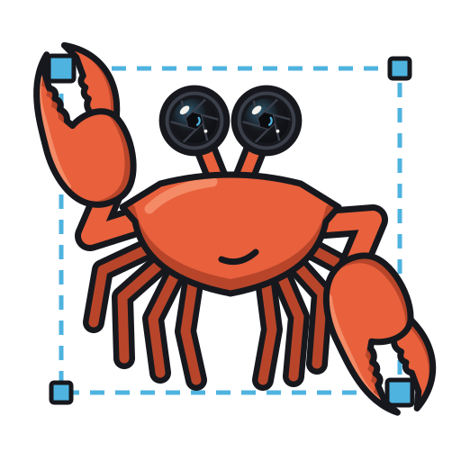
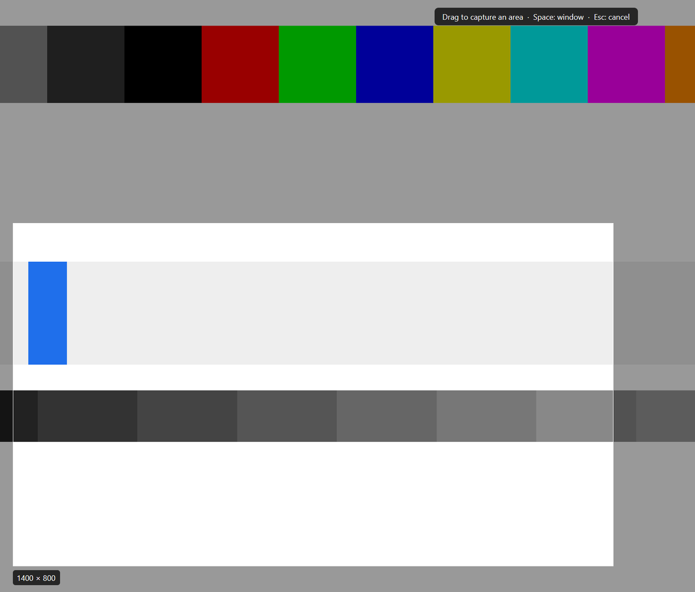
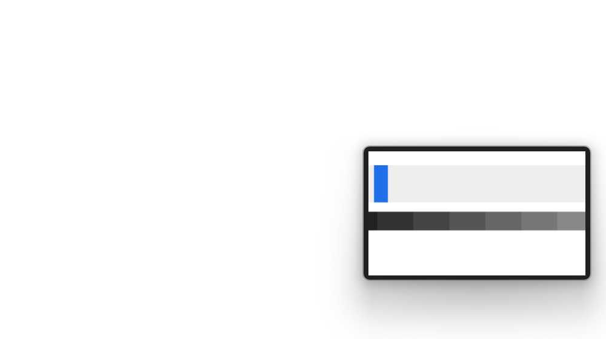
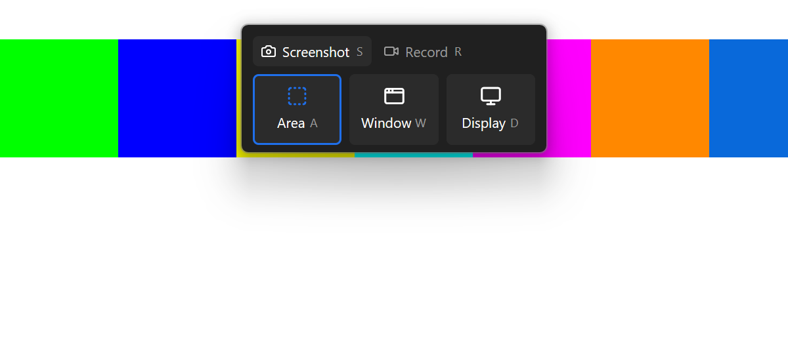
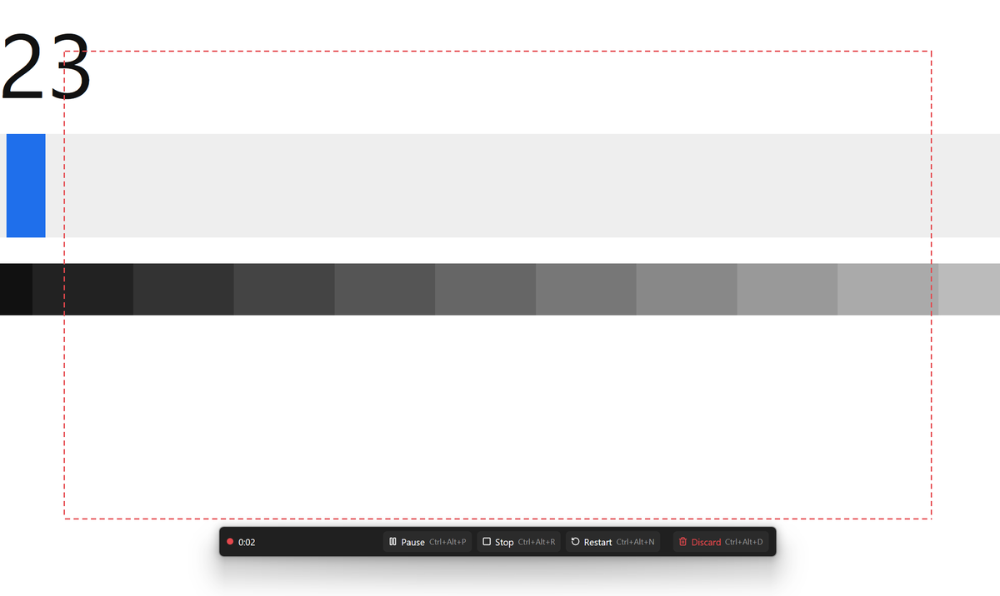
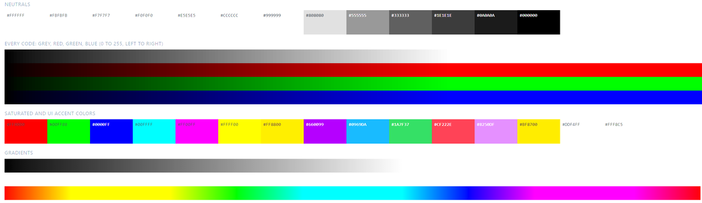
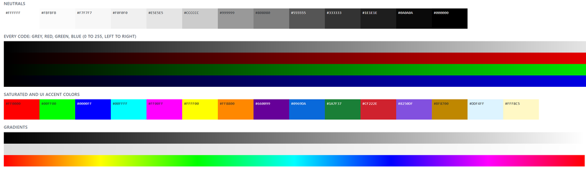

Snip snip.
Fast, keyboard-first screenshots and screen recording for Windows, with colour that holds up on HDR displays.

One shortcut
Press Ctrl+Alt+S and drag an area. Its size shows as you go. Press Space to take a whole window instead, or Esc to cancel.

On your clipboard and saved
Every screenshot goes to the clipboard and into Pictures\Shuttercrab. A thumbnail sits in the corner for a few seconds: click it to open the image, or drag it into a chat, an email or a document. It doesn't take focus, so Ctrl+V works straight away.

Everything from one bar
Ctrl+Alt+C opens the Capture Bar. Choose a screenshot or a recording, then an area, a window or a whole display. Every choice has a letter, so it's quicker typed than clicked.

Records too
Ctrl+Alt+R records an area to MP4. Pause, stop, restart or discard the take from the keyboard. The border and the controls stay out of the video.

Right on HDR
With Windows HDR on, a standard 8-bit capture clips light greys and pale colours to white. Shuttercrab converts the HDR image back to the colours you were looking at. Both captures below are of the same test page.

